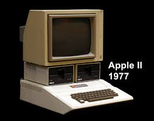

và những cống hiến của ông cho ngành Khoa Học Máy Tính
Máy tính Apple II
 Hình 11: Máy tính Apple II
Apple II - một sản phẩm cách điệu như táo, là máy tính cá nhân 8-bit, một trong những sản xuất hàng loạt rất thành công đầu tiên của Apple về sản phẩm máy vi tính, được thiết kế chủ yếu bởi Steve Wozniak (Steve Jobs đã giám sát và phát triển phần vỏ nhựa (Apple II sản phẩm máy vi tính đúc nhựa đầu tiên), và Rod Holt đã phát triển các nguồn cung cấp năng lượng chuyển đổi ). Nó được giới thiệu vào năm 1977 tại West Coast Computer Faire bởi Jobs và là sản phẩm tiêu dùng đầu tiên bán ra của Apple Computer . Đây là mô hình đầu tiên trong một loạt các máy tính đó đã được sản xuất cho đến khi Apple II ngừng sản xuất vào tháng năm 1993. Apple II cùng với PET 2001 và TRS-80 được tạp chí Bytes gọi đó là những "1977 Trinity" của máy tính cá nhân( tạm dịch là top 3 máy tính cá nhân năm 1997). Apple II có khả năng hiển thị đồ hoạ tốt, và được tin dùng trong giới đồ hoạ từ ngày đó cho tới nay.